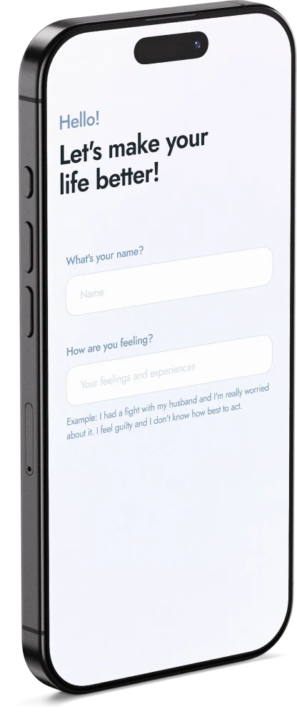
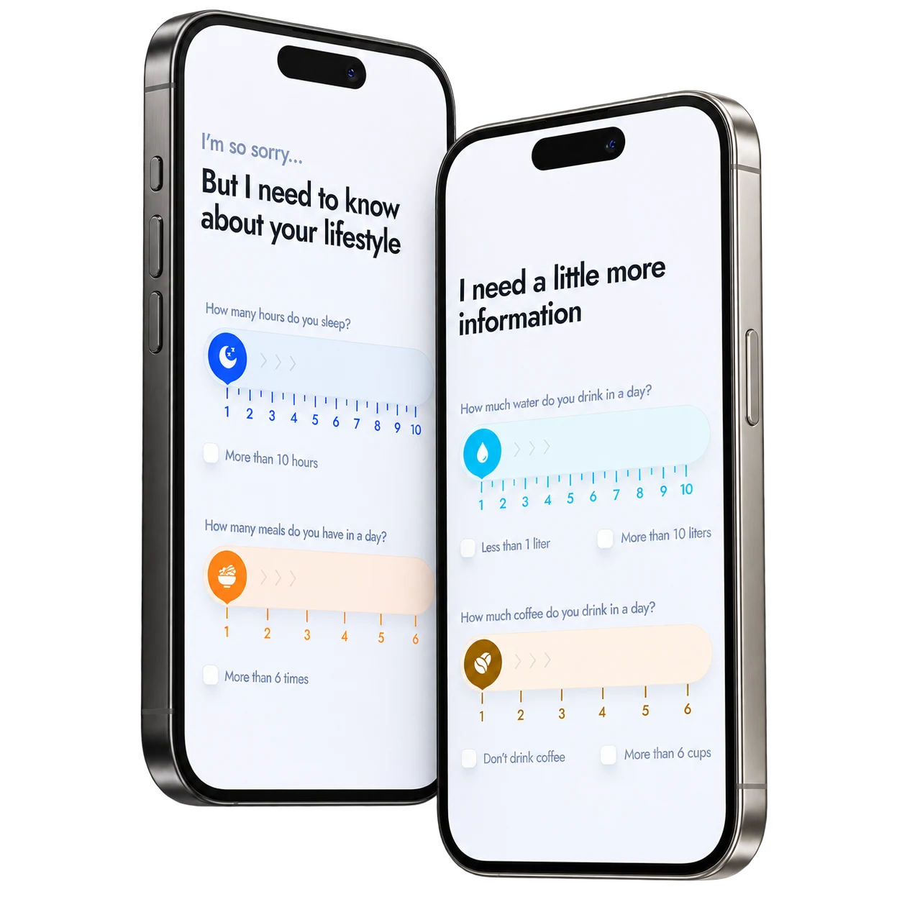
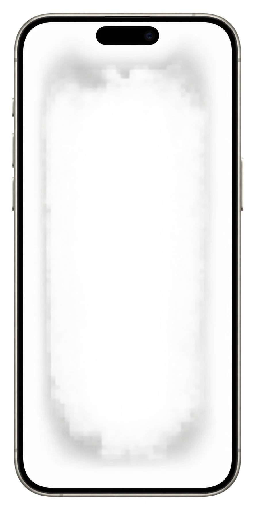
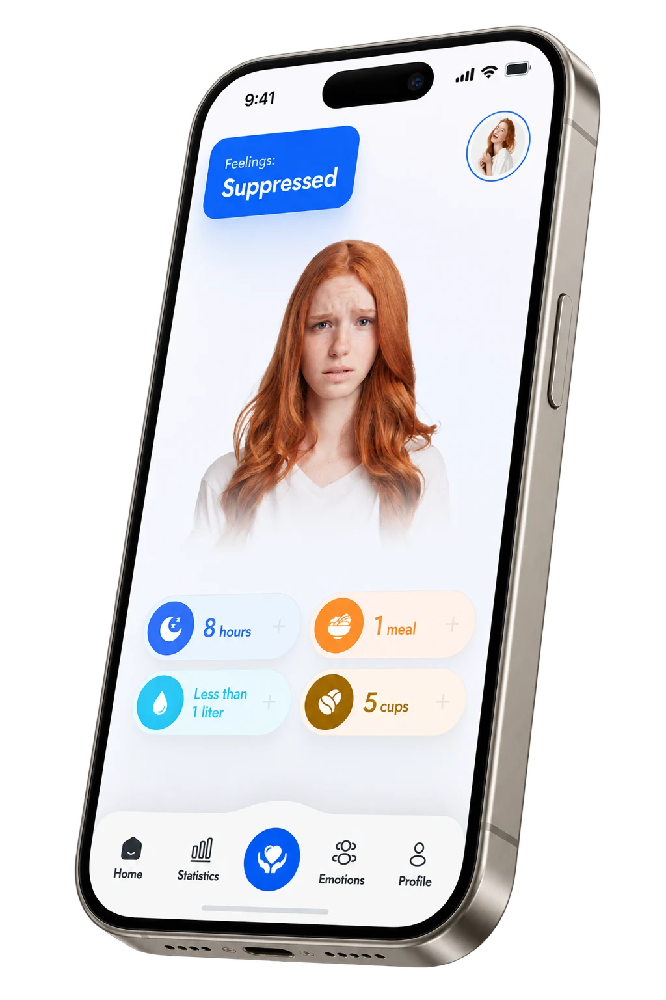
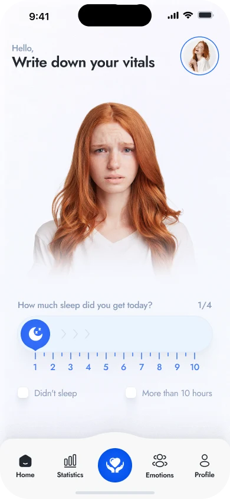
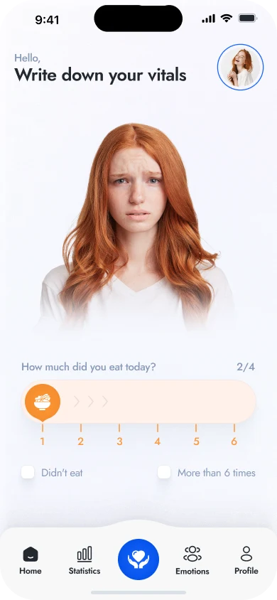
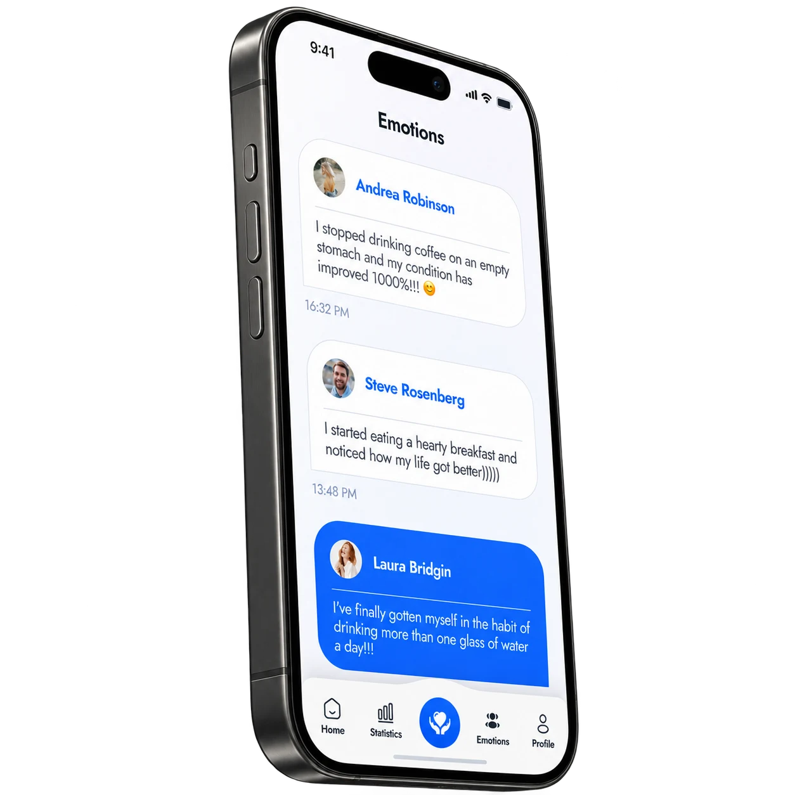
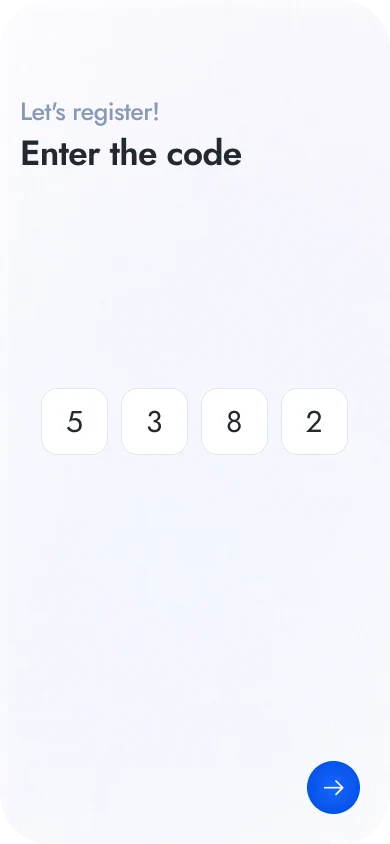
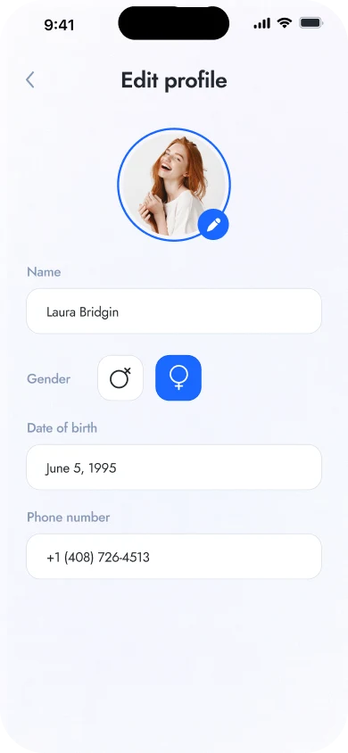
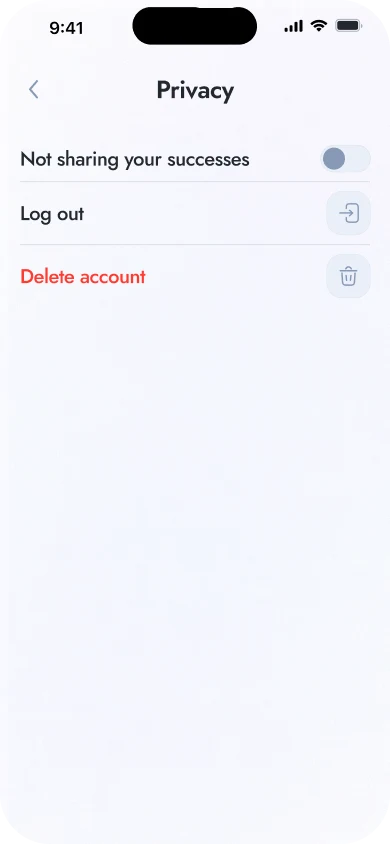

Личный чат
Выскажитесь.
Место для тревог, мыслей и моментов, о которых трудно говорить вслух.


Концепция приложения, которое отражает внутреннее состояние через живого 3D-двойника
В повседневной суете мы теряем связь со своими эмоциями.
How are you? помогает вернуться к себе и увидеть своё внутреннее состояние.

Имя, настроение и повседневные привычки. Знакомство начинается с открытого вопроса и простых шкал, чтобы сделать опыт личным.
Сон и питание. Вода и кофе.
Простые шкалы помогают описать привычный день.

Концепция сканирования лица создаёт личного 3D-двойника. Его выражение меняется вместе с ежедневными отметками настроения, делая ощущения нагляднее.

Знакомое лицо как основа персонализации — визуальная концепция будущего опыта.
Хорошо, нормально или плохо. Короткий вопрос помогает заметить настроение дня, прежде чем перейти к привычкам.
Выражение цифрового двойника меняется в зависимости от отмеченного состояния. Главный экран объединяет это отражение и ежедневные привычки.



Сон, питание, вода и кофе. Четыре цветные шкалы позволяют быстро записать и легко узнать повседневные привычки.




Два пространства для разных потребностей: личный разговор, чтобы выразить чувства словами, и общая лента повседневных переживаний.
Место для тревог, мыслей и моментов, о которых трудно говорить вслух.
Короткие личные публикации превращают повседневные изменения и переживания в общий разговор.

Личные данные, выбор даты, номер телефона и подтверждение кода составляют сценарий регистрации. На каждом шаге — одно решение.



Редактирование профиля, уведомления, настройки публикаций и управление аккаунтом завершают опыт.



Яркий синий объединяет интерфейс. Четыре акцентных цвета связывают привычки со шкалами и сводными карточками. Скругления и мягкие тени делают опыт дружелюбным.
Выразительные заголовки. Понятные повседневные подписи.